In this project we implement Neural Radiance Fields, a technique for parameterizing a radiance field with a neural network.
Part 1: The 2d Case
We first look at the 2d case. We train a simple Multilayer Perceptron (MLP) to learn the RGB pixel values from a 2d coordinate (i, j) in the unit square [0, 1]^2, structured as shown below:
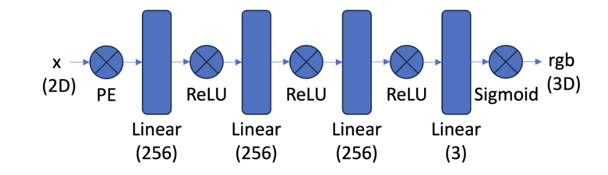
We use a sinusoidal positional encoding (PE) at the start of the network to project the input 2 dimensional coordinate (x, y) into 2*(2*L + 1) dimensional space, with the coordinates of the higher dimensional representation given by [x, y, sin(2^0 pi x), cos(2^0 pi x), sin(2^0 pi y), sin(22^1 pi x), sin(2^1 pi x), cos(2^1 pi x), sin(2^1 pi y), sin(2^1 pi x), ...]. This enables the network to see high frequency (high precision) information about the coordinates. Without this positional encoding, the network does not learn fine grained spatial structure accurately, as we shall see below.
Once the MLP has been trained on an image, we can use it to reconstruct the image by making predictions on a mesh over the unit square. Thus we are training the MLP to parameterize a function from the unit square to the unit cube. It is interesting to note that this is precisely the task that we used bilinear image interpolation for in previous projects such as face warping and image stitching, only now with a more flexible parameterization.
This is the target image that we use for this section.

This is a reconstruction by a neural network:
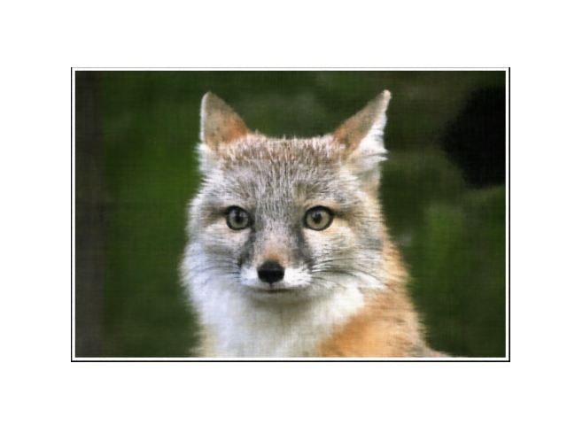
Now we look at some examples of the image that the network learns. Each of the below plots shows the networks predictions at different stages of the training process.
We additionally show the training loss curves, as well as the peak signal to noise ratio (PSNR), computed as 10*log(1/mse). Where mse is the mean squared error training loss.
We fix 256 hidden channels, 2 layers, training for 1000 steps with batch size of 10,000. We vary the positional encoding dimension, indexed by L.
With L=10:
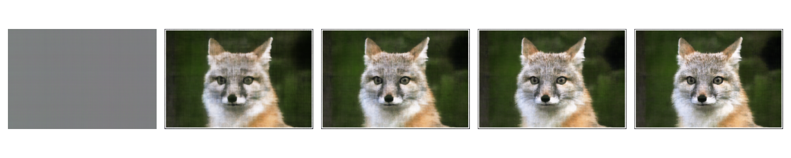
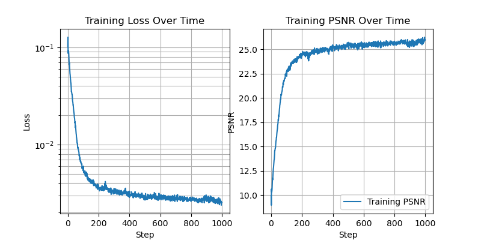
With L=3:
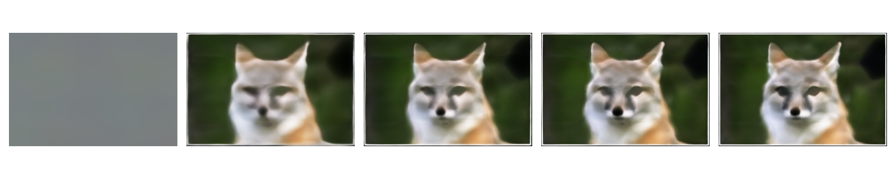
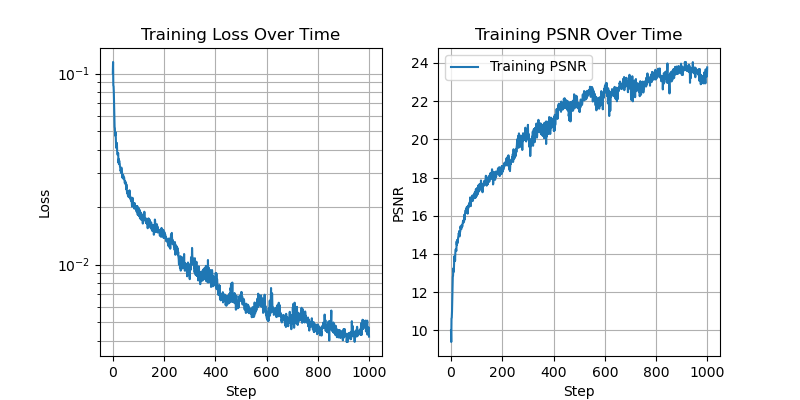
With L=0:
This demonstrates that the positional encoding is indeed helping the network to work with higher spatial frequencies.
Now we fix L=10, and vary the number of hidden channels.
With 256 hidden channels:
With 64 hidden channels:
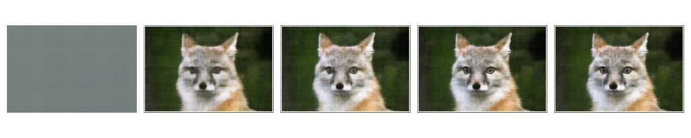
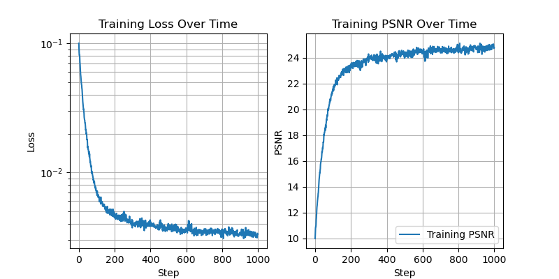
With 16 hidden channels:
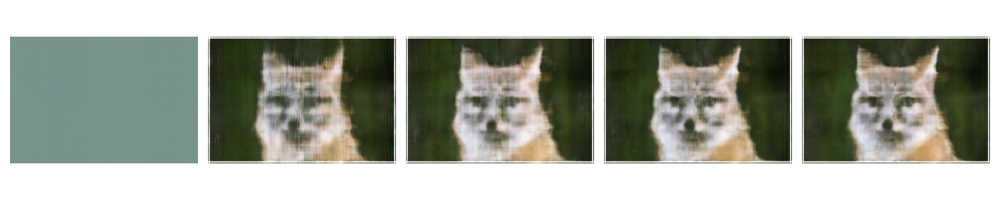
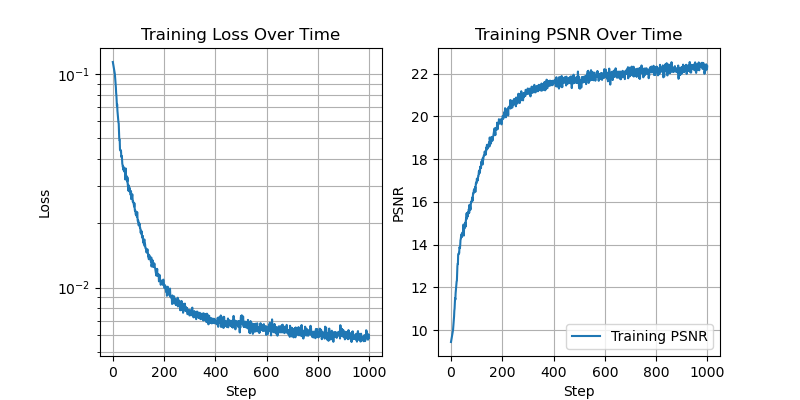
With 8 hidden channels:
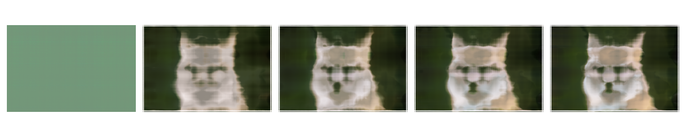
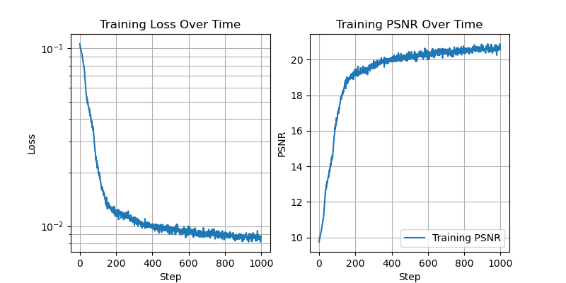
With 4 hidden channels:
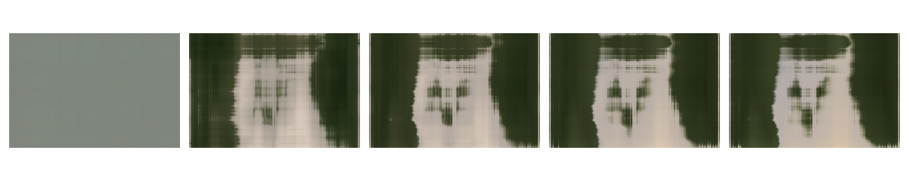
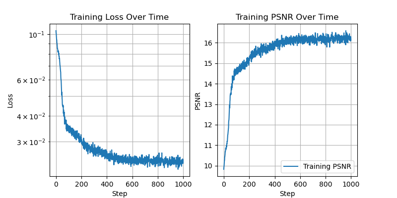
With 2 hidden channels:
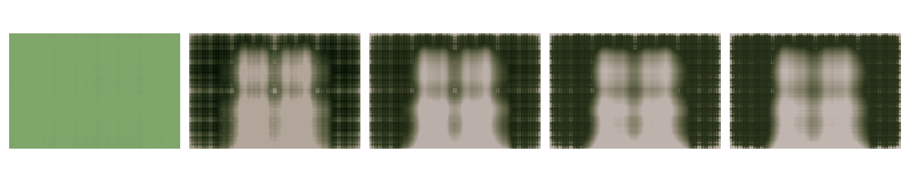
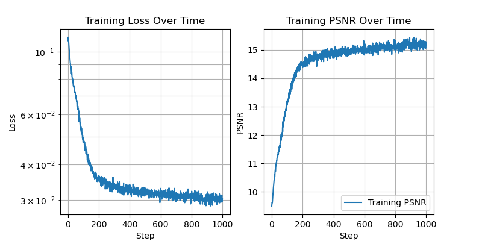
Here we can see that as the number of hidden channels goes to one, the representational power of the network is greatly reduced.
Below we see the training process on another image
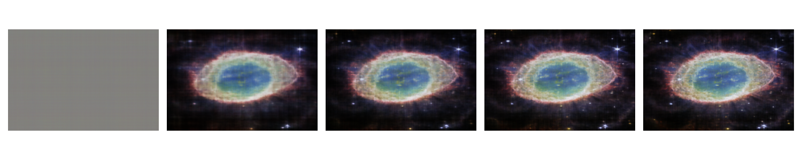
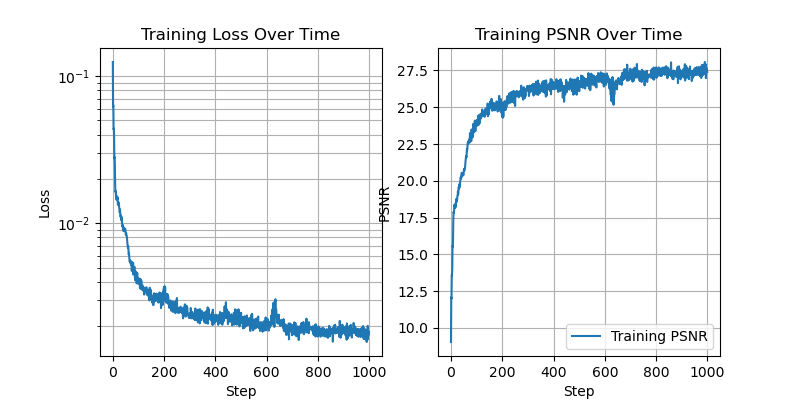
Sampling from DeepFloyd
First, we look at some samples obtained from DeepFloyd, using the pre-canned sampling implementation provided through the Hugging Face Diffusers library. Each of the three images below shows samples from DeepFloyd, obtained with 10, 20, and 100 steps of iterative denoising respectively. We can see that as the number of denoising steps is increased, the model produces samples with higher detail. This reflects the fact that more denoising steps gives the model time to make more precise steps along the trajectory from noise to clean image.


Various denoising approaches
Now we look at an example of the forward process, and compare the denoising results given with various approaches.
Given that the forward process consists of adding gaussian noise to the image, we might try performing a gaussian blur on the noisy images. This turns out to not give good results, which makes sense because we are losing information in both the noising and the denoising procedures in this case.

Next, we use DeepFloyd to predict the noise added to the image in one shot. This relative success of this approach is a testament to the expressivity of the pretrained model. It recovers a decent looking image, but is lacking details, particularly for higher noise levels such as at t=750.

Now, we use DeepFloyd to perform an iterative denoising process. DeepFloyd gives us a prediction of the clean image. We then use this prediction to interpolate between the noisy image and the clean estimate given by the model. Then we repeat this process, each time taking only a small step in the direction of the clean estimate. As this process continues, the model is thus given many chances to estimate the clean image, and it eventually converges to a much more detailed output.


Sampling from DeepFloyd again
Now that we have an iterative denoising procedure, we can apply it to samples of pure noise. The results are reasonable but not particularly sharp.
DeepFloyd is trained with a conditioning signal, so that text input can be given to guide the trajectory. The above images were generated with the conditioning signal of "a high quality photo". To achieve better results, we can use classifier free guidance, where at each step of the denoising process we first obtain two noise estimates from the model, one unconditional, and one conditional, and then take a step in the direction given by extrapolating towards the conditional estimate (in contrast to interpolating between the two estimates). This gives qualitatively more realistic and vibrant generations.

Image to image Translation
Now we implement the SDEdit algorithm, which stochastically edits an image by adding noise to our original image and then using the demoiser to obtain a new image. When we add only a small amount of noise, we obtain a similar image, but as we add more noise we obtain more drastically edited images. We can also use this technique to map from a simple drawing to a more realistic image, as shown below.


Additionally, we can condition the denoiser to generate images in a new direction. Shown below is the result of conditioning with the text prompts of "a rocket", and "an oil painting of an old man"


Next we experiment with inpainting, where we mask out a portion of the original image and fill in the masked region with the diffusion process. At each step of the denoising process we overwrite the unmasked region of the image with an appropriately noised version of the original image, thus ensuring that the output matches the original image in the unmasked regions.


Next we experiment with visual anagrams, an beautifully simple technique for creating a stimulating visual effect. In this case, at each step of the denoising process we create two noise estimates, conditioned on two different text prompts, and then take a step in the direction of the average the two noise estimates. The catch is that one of our noise estimates is obtained on a flipped version of the image. The result is that the final image has two different visual meanings when viewed right side up or upside down. Below we see images of people sitting around a campfire from one orientation, and when looked at upside down they are images of a man, a man wearing a hat, and a dog.


To finish out this first part of the project, we experiment with factorized diffusion, a technique for creating hybrid images (which we also explored in project 2 of this class). Similar to the approach taken for creating visual anagrams, factorized diffusion proceeds by obtaining two estimates at each stage of the denoising process, now instead of passing rotated versions of the intermediate images through the denoiser, we pass low and high pass filtered images through the denoiser. The idea is that one noise estimate denoises the low frequency components of the image according to one conditioning signal, and the other noise estimate denoises the high frequency components of the image with the other conditioning signal. In practice I found this to be a fairly unrobust process, with only a few of the many samples giving the desired results.


Implementing and training a diffusion model for MNIST digits
Now that we have explored some of what diffusion models are capable of, we turn to the task of implementing and training a diffusion model from scratch. We follow an outline provided by the CS180 staff, following the DDPM paper. We implement a tiny UNet which we use as our denoiser throughout. The figure below, provided by the CS180 staff, outlines the unconditional UNet architecture.
Next we visualize adding variable amounts of noise to images from the MNIST dataset. This constitutes our training data.

First we train the unconditional UNet to recover images after adding a fixed amount of noise (sigma=0.5).

We can see that the model learns well to reconstruct the original images. Below is the predictions of the model after going through 1 and then 5 epochs of training.


We then look at how the model handles out of distribution inputs, by passing in inputs with varying levels of noise. We can see that the model is not adequate for denoising images with larger amounts of noise than it saw in its training data.

The fact that the model is unable to work with varying noise levels means that we can not use this implementation for the iterative denoising trajectory that we wish to simulate for novel generation from pure noise.
To rectify this issue, we introduce a time conditioning into the UNet, so that we may perform iterative denoising by passing in a time parameter into the UNet during the denoising process, and training on variable levels of noise. Following the DDPM paper, the time parameter corresponds to differing amounts of noise. This enables the model to generate coherent predictions along the entire trajectory from noise to clean image. Time conditional DDPM training curve:

We can see that now our time conditional UNet is able to generate clean images starting from pure noise, with varying degrees of success. By the end of the training, the model generates images that either are recognizable as handwritten digits, or are plausibly close. Below, we visualize the time conditional DDPM sampling trajectories after 1, 6, 11, 16, and 20 epochs of training. Mouse over to run the animations. To further improve the model, we additionally introduce a class conditioning input to the UNet. Both the time and class conditioning signals are input into the latent representations in the center of the model. In the below class conditional training curve, we can see that the training loss is improved once we introduce the class conditioning,

Now we look visualize the final class conditional model generations. The below plots are after 1, 6, 11, 16, and 20 epochs of training. Again, mouse over to run the animations. The samples here are qualitatively more coherent than the case where we only use a time conditioning signal, and evidently the class conditioning signal appropriately guides the generation to the requested digit, so we are content.
This project was far and away my favorite of the semester. Diffusion models are an exciting topic which I am excited to explore further in the near future!